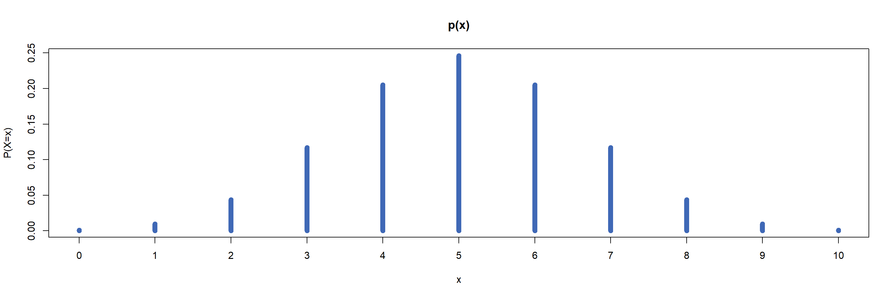
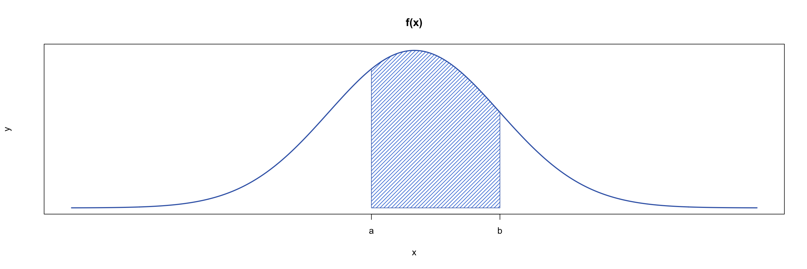
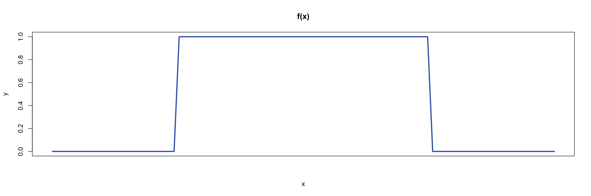

PMFs, PDFs, and CDFs
Probability
Statistics
Summary
Probability mass functions (PMFs), probability density functions (PDFs), and cumulative distribution functions (CDFs) are fundamental concepts in statistics. These functions describe how probabilities are distributed across the possible outcomes of random events. PMFs, PDFs, and CDFs are commonly used to model probability distributions, helping to visualize and understand the behaviour of random processes. This guide will explore the role of each function, how they differ, and highlight their applications.
Before reading this guide, it is highly recommended that you read [Guide: Introduction to probability], [Guide: Discrete random variables versus continuous random variables], and [Guide: Introduction to integration].
Introduction
PMFs, PDFs, and CDFs are key tools in the study of probability, used to model and analyze the behaviour of random variables. These functions describe how probabilities are distributed across the possible outcomes of random events. In turn, a probability distribution provides a complete description of how these probabilities are assigned to all the possible values of a random variable, whether discrete or continuous. Understanding these functions is important for analyzing data, making predictions, and applying statistical methods to solve real-world problems.
What is a probability mass function (PMF)?
As you have seen in [Fact sheet: Discrete random variables versus continuous random variables], a discrete random variable can take on a countable number of distinct outcomes. For example, rolling a fair six-sided die can result in only one of six possible outcomes. A probability mass function (PMF) assigns probabilities to each individual outcome of a discrete random variable, helping to determine the chance of a specific event occurring. In the case of the fair six-sided die, the PMF assigns a probability of \(1/6\) to each outcome, reflecting that each outcome is equally likely. When applied to the entire discrete random variable, a PMF describes how the total probability is distributed across all possible outcomes. More formally:
Definition of a PMF
A probability mass function or PMF is a function \(p(x)\) that, when applied to a discrete random variable \(X\), returns the probability \(P(X=x)\) that \(X\) is equal to a specific value \(x\). The PMF can be expressed as:
\[ p(x) = P(X = x) \]
where \(P(X = x)\) is the probability that \(X\) equals \(x\).
For a PMF to be considered a valid probability distribution for a random variable, it must satisfy two conditions:
- Non-negativity: The probability assigned to each possible outcome must be greater than or equal to zero, that is:
\[p(x) = P(X = x) \geq 0\textsf{ for all values of }x.\]
- Honesty condition: The sum of probabilities of all possible outcomes \(x\) of a discrete random variable \(X\) must be equal to one: \[\sum_{x} p(x) = \sum_{x} P(X = x) = 1.\]
Tip
The symbol \(\sum\) is called sigma notation and represents the sum of all values in a particular set. In this example, it is adding the probabilities from all possible outcomes of a random variable \(X\). For more examples, see Guide: Introduction to sigma notation
Tip
These conditions follow from the laws of probability. For more, see [Guide: Introduction to probability].
Example 1
You are given a fair six-sided die. Let the discrete random variable \(X\) represent the result of rolling the die, and \(x\) represent the six possible outcomes: \(1, 2, 3, 4, 5,\) and \(6\). Since the die is fair, each outcome has an equal probability of \(1/6\). So the PMF \(p(x)\) for this scenario is given by:
| \(x\) | 1 | 2 | 3 | 4 | 5 | 6 |
|---|---|---|---|---|---|---|
| \(P(X = x)\) | \(\dfrac{1}{6}\) | \(\dfrac{1}{6}\) | \(\dfrac{1}{6}\) | \(\dfrac{1}{6}\) | \(\dfrac{1}{6}\) | \(\dfrac{1}{6}\) |
Table 1: PMF of rolling a fair six-sided die as in Example 1.
You can check that this is a valid PMF:
Non-negativity: All \(P(X = x) = 1/6 \geq 0\), so each probability is positive, satisfying the non-negativity requirement.
Honesty: You can take the sum across all outcomes: \[\sum_{x} P(X = x) = \dfrac{1}{6} + \dfrac{1}{6} + \dfrac{1}{6} + \dfrac{1}{6} + \dfrac{1}{6} + \dfrac{1}{6} = 1\] confirming that the total probability of the PMF equals \(1\), meeting the honesty condition.
Since the PMF satisfies both the non-negativity and honesty conditions, it is a valid PMF which represents the scenario of rolling a fair six-sided die.
Example 2
Imagine you flip a fair coin twice. Let the discrete random variable \(X\) represent the number of times the coin lands on heads, so the possible outcomes \(x\) are \(0,1,\) or \(2\).
Since the coin is fair, with equal probabilities for both heads (\(H\)) and tails (\(T\)), the probabilities of the number of heads are determined by counting the outcomes with the correct number of heads. The set (sample space, see [Guide: Introduction to probability]) of all possible outcomes of flipping a fair coin twice are \(\{HH, TH, HT, TT\}\).
- The probability of no heads corresponds to one of the four possible outcomes \(TT\), so \(P(X=0) = 1/4\).
- The probability of one head corresponds to two of the four possible outcomes \(HT,TH\), so \(P(X=1) = 2/4 = 1/2\).
- The probability of two heads corresponds to one of the four possible outcomes \(HH\), so \(P(X=2) = 1/4\).
So the PMF \(p(x)\) for this scenario is:
| \(x\) | 0 | 1 | 2 |
|---|---|---|---|
| \(P(X = x)\) | 0.25 | 0.5 | 0.25 |
Table 2: PMF for counting the number of heads in two coin flips as in Example 2.
You can see that this PMF also satisfies both key conditions:
Non-negativity: All probabilities are positive, as \(P(X = x) \geq 0\) for all values of \(x\).
Honesty: The sum of probabilities equals \(1\): \[\sum_{x} P(X = x) = 0.25 + 0.5 + 0.25 = 1\]
So, this is a valid PMF representing the number of heads when you flip a fair coin twice.
Example 3
Building on Example 2, common example of a PMF is that of the binomial distribution. This is a type of PMF used to count the number of successes in a series of trials with only two possible outcomes: a success with probability \(p\), or a failure with probability \(q = 1 - p\). Here, the random variable \(X\) is ‘number of successes’.
Take \(x\) to be the number of successes in a number \(n\) of trials, \(p\) is the probability of success in a single trial, and \(q = 1 - p\) is the probability of failure. Then the PMF \(p(x)\) for a binomial distribution is given by:
\[ p(x) = P(X=x) = \binom{n}{x} p^x q^{(n-x)} = \frac{n!}{(n-x)! x!} p^x q^{(n-x)} \] Binomial distributions are often used to model real life scenarios, such as the probability of heads occurring in multiple fair coin flips (as in Example 2!). In this example, heads are considered a success and tails a failure. This time imagine flipping a coin \(10\) times, where the probability of success (heads) is \(0.5 = 1/2\) and the probability of failure (tails) is \(1 - 0.5 = 0.5 = 1/2\).
The power of the binomial PMF above comes from the number of trials. With two coin flips (as in Example 2), there are \(4 = 2^2\) outcomes to consider, which you can count. With ten coin flips, there are \(2^{10} = 1024\) different outcomes, which is harder to count. The binomial distribution formula takes care of the probability for you. For instance, the probability of flipping a coin ten times (so \(n=10\)) and getting four heads (so \(x = 4\)) is:
\[P(X=4) = \binom{10}{4} \left(\frac{1}{2}\right)^4 \left(\frac{1}{2}\right)^{10-4} = 210\cdot \left(\frac{1}{2}\right)^{10} = \frac{210}{1024} \approx 0.205\]
Figure 1 below shows the probability distribution for the number of heads in a trial of ten coin flips.
You can find that all binomial distributions are valid PMFs: see Proof sheet: PMFs, PDFs, CDFs for more.
What is a probability density function (PDF)?
Unlike discrete random variables, continuous random variables can take on any number of values within a specified range. For instance, a person’s height could be \(170\)cm, \(170.1\)cm or \(170.000001\)cm. Since these values cannot be counted, calculating the probability distribution for continuous random variables requires the use of a probability density function (PDF).
Unlike PMFs, PDFs assign probabilities to intervals rather than to specific values; this is because there are so many values that assigning probabilities to each of them is impossible to do so (see below!) PDFs are therefore key for determining the likelihood of a continuous random variable falling within a given range.
When applied over all possible values of a continuous random variable \(X\), the PDF \(f(x)\) can be represented as a curve that shows the total probability distribution across all possible outcomes.
The probability \(P(a\leq X\leq b)\) that the random variable \(X\) lies within an interval \([a,b]\) is equal to the area under the curve of PDF \(f(x)\) between \(a\) and \(b\) as shown in Figure 2:

Definition of a PDF
A probability density function or PDF is a function \(f(x)\) that represents the distribution of probabilities across a continuous random variable \(X\). The probability that \(X\) lies within an interval \([a,b]\) is found by integrating the PDF over that interval: \[P(a\leq X\leq b)= \int_{a}^{b} f(x) \, \textrm{d}x \] where \(P(a\leq X\leq b)\) is the probability that \(X\) lies between \(a\) and \(b\).
Just like PMFs, PDFs must satisfy two main conditions to be considered valid:
Non-negativity: The PDF \(f(x)\) must be greater than or equal to zero over its entire range of possible values: \[f(x)\geq 0\textsf{ for all values of }x.\]
Honesty condition: The area under the entire PDF \(f(x)\) must be equal to \(1\), so: \[\int_{-\infty}^{\infty} f(x) \, \textrm{d}x = 1.\]
Warning
You may be wondering why probabilities for continuous random variables are calculated over intervals, not at individual values. This is because PDFs cannot return probabilities at specific values.
This is because of any continuous random variable with any PDF \(f(x)\), working out the probablity \(P(X=a)\) gives: \[P(X=a) = P(a\leq X\leq a) = \int_{a}^{a} f(x) \, \textrm{d}x = 0\] by properties of integration. (See [Guide: Properties of integration] for more.)
Example 4
You are given \(X\) a continuous random variable which is uniformly distributed on the interval \([0,1]\). Here, the word uniformly means that all values between \(0\) and \(1\) are equally likely to occur. The PDF for \(X\) is given by: \[ f(x) =\begin{cases} 1 & \textsf{if } 0 \leq x \leq 1 \\0 & \textsf{otherwise} \end{cases} \] and a picture can be found in Figure 3.

The formula for a uniform distribution over any interval \([a,b]\) is given by: \[ f(x) =\begin{cases} \dfrac{1}{b-a} & \textsf{if } a \leq x \leq b \\[0.5em]0 & \textsf{otherwise} \end{cases} \]
The choice of probability here is not an accident; it will ensure that the honesty condition holds for any interval \([a,b]\). See Proof sheet: PMFs, PDFs, CDFs for more.
To find the probability that \(X\) lies between \(0.25\) and \(0.5\), you can calculate the area under the curve of the PDF within the interval: \[\int_{0.25}^{0.5} f(x) \, \textrm{d}x = \int_{0.25}^{0.5} 1 \, \textrm{d}x = \big[\,x\,\big]_{0.25}^{0.5} = 0.5 - 0.25 = 0.25\] Therefore, the probability that \(X\) lies in the interval \([0.25,0.5]\) is \(0.25\).
Example 5
The normal distribution is a widely used example of a PDF. It is often employed to model naturally occurring phenomena such as height, weight, and other biological measurements; as well as being a central key in modelling statistics of independent and identically distributed variables.
The general PDF of the normal distribution is given by:
\[ f(x) = \frac{1}{\sigma \sqrt{2\pi}} \exp\left({-\frac{1}{2} \left( \frac{x - \mu}{\sigma} \right)^2}\right) \] where \(\mu\) is the mean and \(\sigma\) is the standard deviation. (See [Guide: Mean, variance, and standard deviation] for more.)
All normal distributions are considered valid PDFs; see Proof sheet: PMFs, PDFs, CDFs for more.
You will find that normal distributions share a similar shape, with the peak centered at the mean and the steepness of the curve dependent on the standard deviation.
Here is an interactive figure which allows you to change the mean \(\mu\) and the standard deviation \(\sigma\) of the normal distribution. See what happens when both are changed!
Key differences between PMFs and PDFs
| Probability mass function (PMF) | Probability density function (PDF) |
|---|---|
| Finds the probabilities of discrete random variables | Finds the probabilities of continuous random variables |
| Probabilities range from 0 to 1 for each exact outcome | Probabilities are calculated over intervals as the probability of an exact outcome is always 0. |
| Provides likelihood that \(X\) occurs at an exact value | Provides likelihood that \(X\) lies within an interval |
| Sum of probabilities equals 1 | Integral over entire domain equals 1 |
Table 3: Table comparing the key differences between PMFs and PDFs.
What is a cumulative distribution function (CDF)?
Another key concept in the area of probability distributions is the cumulative distribution function (CDF). A CDF returns the probability that a random variable \(X\) is less than or equal to a specific value \(x\). CDFs can be derived from both probability mass functions (PMFs) for discrete random variables and probability density functions (PDFs) for continuous random variables.
Definition of a CDF
A cumulative distribution function or CDF is a function \(F(x)\) that returns the probability that the random \(X\) is less than or equal to a variable \(x\). This probability is written by \(P(X\leq x)\).
- For a discrete random variable with a PMF \(p(x)\), the CDF is given by: \[F(x) = P(X \leq x) = \sum_{y \leq x} p(y)\] where \(y\) is an outcome ‘less than or equal to’ \(x\), given the appropriate order on the set of all possible outcomes.
- For a continuous random variable with a PDF \(f(x)\), the CDF is given by: \[F(x) = P(X \leq x) = \int_{-\infty}^{x} f(y) \, \textrm{d}y\] where \(y\) is a ‘dummy variable’ allowing for the computation of this integral.
Warning
CDFs are always non-decreasing. This is because they deal with cumulative probabilities, which represent the total probability up to a certain point. Since the probability of an event can only increase or remain the same as more outcomes are considered, the probability of a random variable being less than or equal to any value \(x\) is always non-decreasing as \(x\) increases.
Example 6
Suppose you roll a fair six-sided die, as in Example 1. Since this scenario involves a PMF, the cumulative distribution function (CDF) can be derived using the following method.
To find the probability of rolling a three or lower, add the probabilities of rolling each number less than or equal to three: \[F(3) = P(X \leq 3) = \sum_{x \leq 3} p(x) = \underbrace{\frac{1}{6}}_{P(X=1)} + \underbrace{\frac{1}{6}}_{P(X=2)} + \underbrace{\frac{1}{6}}_{P(X=3)} = \frac{3}{6} = \frac{1}{2}\]
Therefore, the probability of rolling a three or lower is \(50\%\).
You can extend this working to show that the entire CDF is given by:
| \(x\) | 1 | 2 | 3 | 4 | 5 | 6 |
|---|---|---|---|---|---|---|
| \(P(X \leq x)\) | \(\dfrac{1}{6}\) | \(\dfrac{1}{3}\) | \(\dfrac{1}{2}\) | \(\dfrac{2}{3}\) | \(\dfrac{5}{6}\) | 1 |
Table 4: CDF for rolling a fair six-sided die, as in Example 6.
Example 7
Imagine you flip a coin twice, like in Example 2, and let \(X\) be the random variable corresponding to the number of heads. Since this scenario represents a discrete random variable with a PMF, the CDF can be derived by summing the probabilities of outcomes less than or equal to \(x\), similar to the previous example:
| \(x\) | 0 | 1 | 2 |
|---|---|---|---|
| \(P(X \leq x)\) | 0.25 | 0.75 | 1 |
Table 5: CDF for flipping a fair coin twice, as in Example 7.
To find the probability that \(X\) is strictly greater than \(x\), you can subtract the correlating value in the CDF from the total probability.
For example, to find the probability that \(X\) is greater than \(1\): \[P(X > 1) = 1 - F(1) = 1 - P(X \leq 1) = 1 - 0.75 = 0.25\]
Therefore, the probability that \(X\) is greater than \(1\) is \(0.25\).
Example 8
Consider a continuous random variable \(X\) uniformly distributed between \(0\) and \(1\), which you saw in Example 4. The PDF of \(X\) was given by:
\[f(x) =\begin{cases}1 & \textsf{if } 0 \leq x \leq 1 \\0 & \textsf{otherwise} \end{cases}\]
To find the probability that \(X\) is less than or equal to 0.5, you use the formula from the definition of the CDF:
\[F(0.5) = P(X \leq 0.5) = \int_{-\infty}^{0.5} f(y) \, \textrm{d}y\] You can then use properties of integration by splitting the limits of integration to match the definition of the PDF. This allows you to work out the value of the integral:
\[\int_{-\infty}^{0.5} f(y) \, dy = \int_{-\infty}^{0} f(y) \, dy + \int_{0}^{0.5} f(y) \, dy = \int_{-\infty}^{0} 0 \, dy + \int_{0}^{0.5} 1 \, dy = 0 + [x]_0^{0.5} = 0.5\]
So the probability of \(X\) being less than or equal to \(0.5\) is \(50\%\).
On the other hand, to find the probability that \(X\) is greater than \(0.5\), you can subtract the CDF value at \(0.5\) (which is \(F(0.5)\) from the total probability \(1\): \[P(X>0.5) = 1 − F(0.5) = 1 − 0.5 = 0.5\] So the probability that \(X\) is greater than \(0.5\) is also \(50\%\).
Quick check problems
In the following questions, please enter your answers as decimal numbers.
- Are the following statements true or false?
PMFs are used for discrete random variables:
PDFs assign probabilities to individual outcomes:
The CDF can decrease as the random variable increases:
- A fair 4-sided die is rolled.
What type of probability distribution function would you use for this scenario?
What is the probability of rolling a 4?
What is the probability of rolling a number less than or equal to a 2?
What is the probability of rolling an even number?
- A continuous random variable \(X\) is uniformly distributed on \([0,4]\).
What probability distribution function would you use for this scenario?
What is the value of \(f(x)\) over the interval \([0, 4]\)?
What is \(P(1 \leq X \leq 3)\)?
What is the probability \(P(X \leq 2)\)?
Further reading
[For more questions on the subject, please go to Questions: PMFs, PDFs, and CDFs.]
For more on probability distributions see [Overview: Probability distributions]
Version history and licensing
v1.0: initial version created 12/24 by Sophie Chowgule as part of a University of St Andrews VIP project.